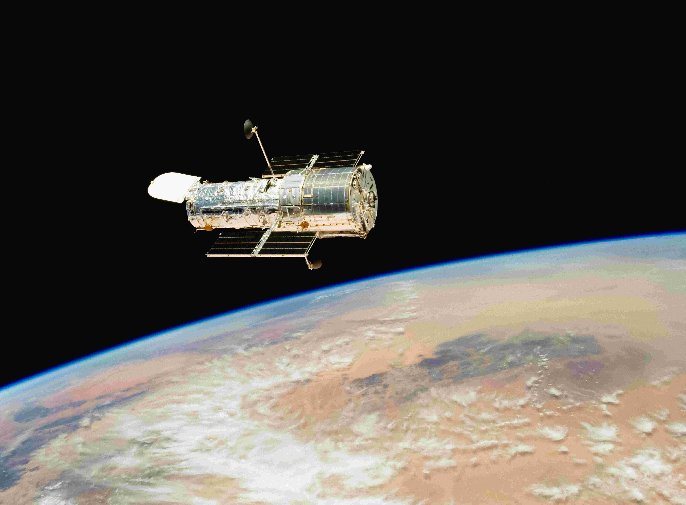
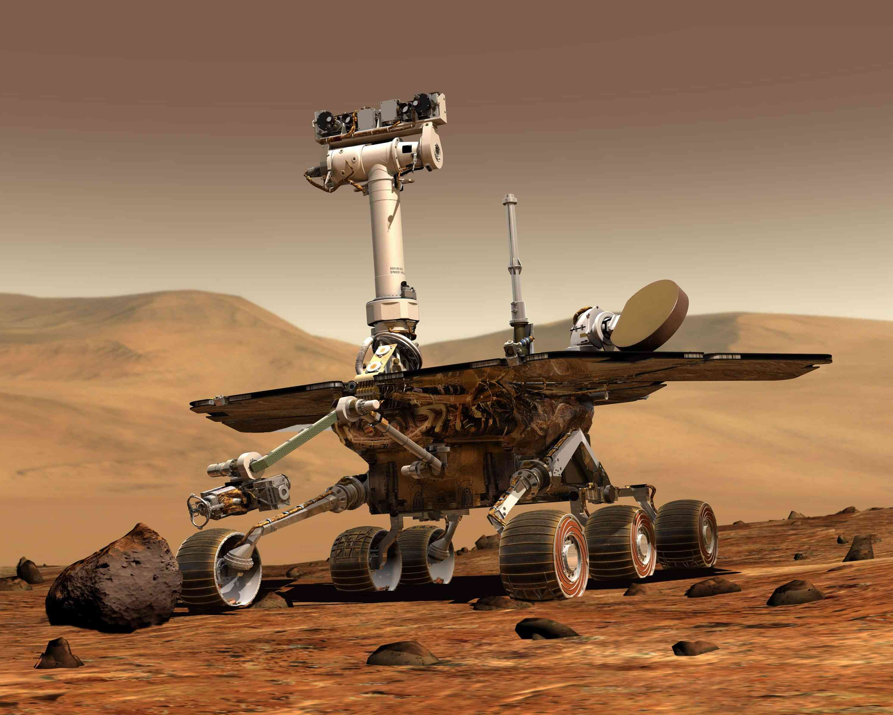
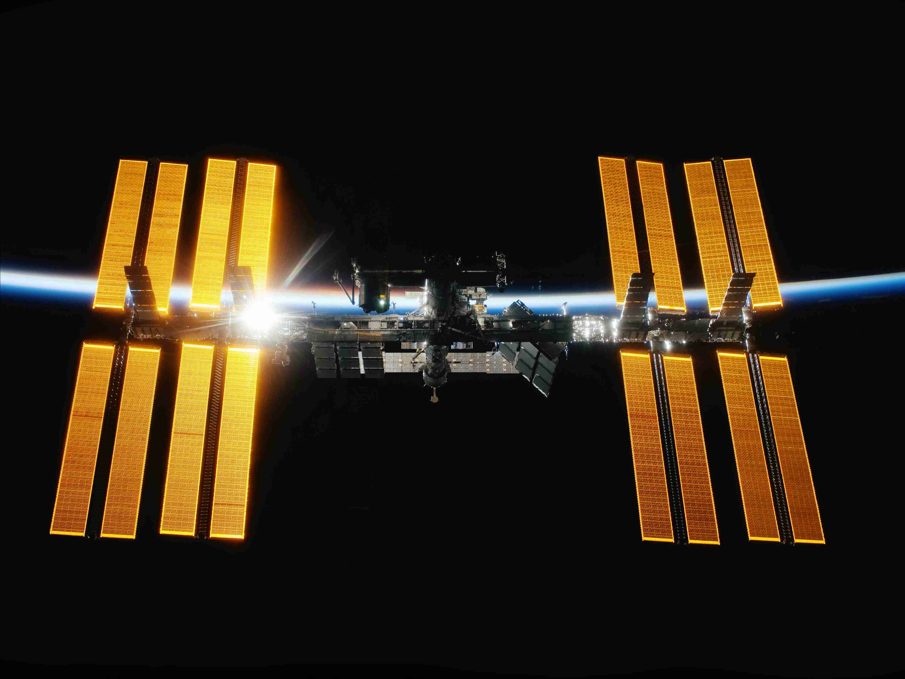
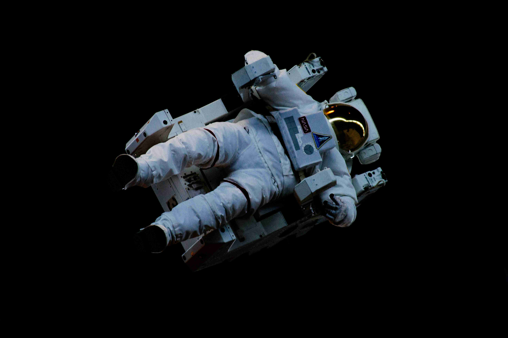

Technology beyond Earth
Space Technology
From observing distant galaxies to exploring the surfaces of other worlds, these technologies have helped deepen our understanding and exploration of space.
Space Telescopes

NASA's Hubble Space Telescope
Robotic Rovers

Mars Exploration Rover "Opportunity"
Space Stations

NASA's International Space Station
Space Suits

Space Suit (Extravehicular Mobility Unit)